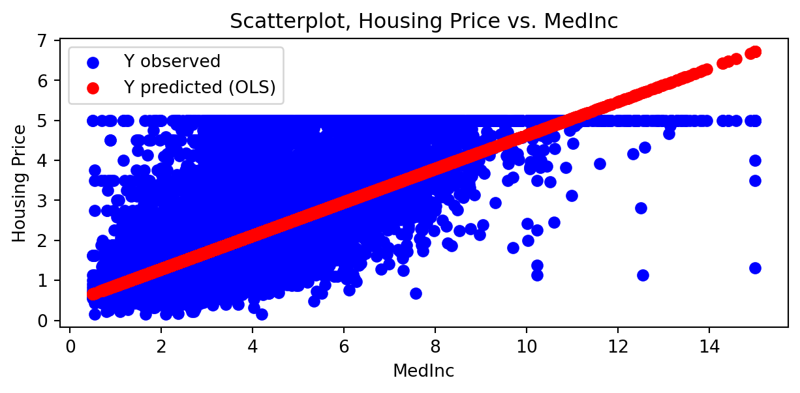
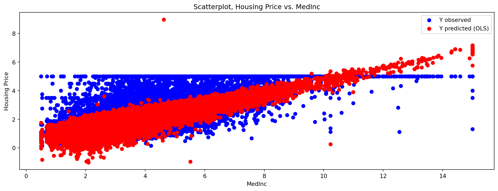
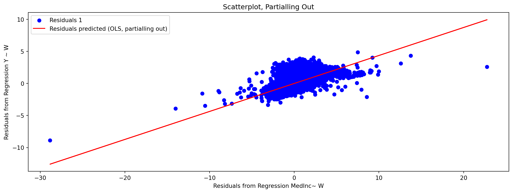
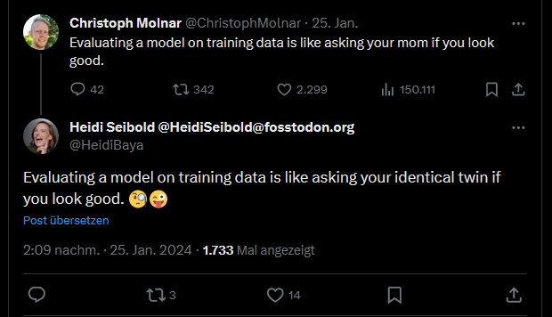
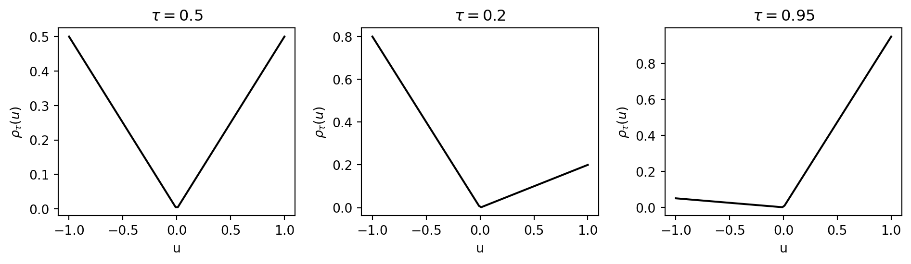
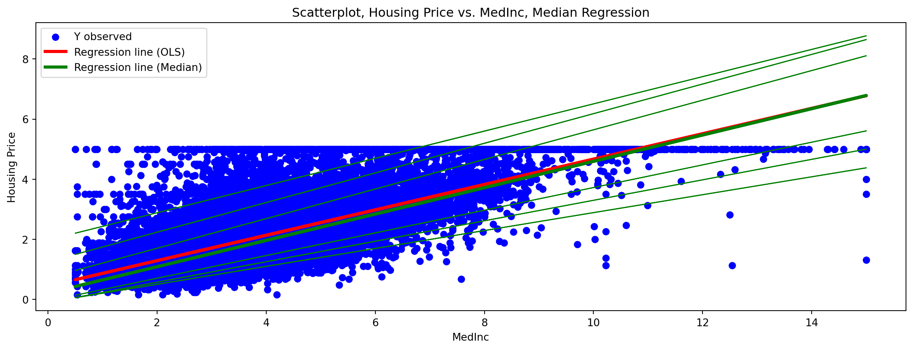
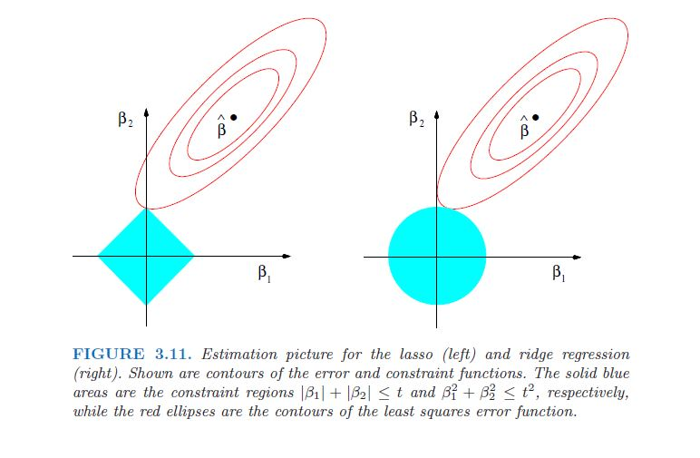

Lecture 3: Regression
Topics in Econometrics and Data Science
Prof. Dr. Jannis Kück
Part III: Machine Learning, Regression
\(\newcommand{\E}{{\mathbb{E}}}\) \(\newcommand{\N}{{\mathbb{N}}}\) \(\newcommand{\R}{{\mathbb{R}}}\)
\(\newcommand{\nto}{\xrightarrow[n\to\infty]{}}\) \(\newcommand{\Dto}{\xrightarrow[]{\mathcal{D}}}\) \(\newcommand{\Pto}{\xrightarrow[]{P}}\) \(\newcommand{\asto}{\xrightarrow[]{a.s.}}\) \(\newcommand{\Lto}{\xrightarrow[]{\mathcal{L}_2}}\) \(\DeclareMathOperator{\rank}{rank}\) \(\DeclareMathOperator{\sign}{sign}\)
Machine Learning
Regression
- Introduction
- Ordinary Least Squares
- Quantile Regression
- Linear Machine Learning Methods
Introduction to Regression Methods
Setting: Observe a sample \((Y_1,X_1),\dots,(Y_n,X_n)\) with \[ Y_i = X_i\beta+\varepsilon_i=\sum\limits_{j=1}^p \beta_j X_{i,j}+\varepsilon_i\] where \(X_i=(X_{i,1},\dots,X_{i,p})\in\R^{p}\) is a \(p\)-dimensional vector of regressors and \(\beta\) a \(p\)-dimensional vector of regression coefficients.
The vector/matrix \(X_i\) contains the information on individual \(i\) in terms of the \(p\) observable characteristics, e.g., a person’s age, educational background, region/city of residence, etc.
\(\varepsilon_i\) is an error term that emerges naturally due to unobserved characteristics. We assume \(\E\left[\varepsilon_i \vert X_{1i}, ..., X_{pi}\right] = 0.\)
Definition: Regression vs. Classification
Regression:
Regression problems are concerned with estimation of the relationship between a quantitative output \(Y\) and covariates \(X\)
Examples: Wage equations (Mincer equation), estimation of demand functions, ….
Classification
Classification deals with qualitative outcomes \(Y\) (e.g. coded as 0/1, -1/+1).
Examples: Fraud detection (fraud vs. no fraud), image recognition, ….
Concepts: Prediction vs. Inference
Regression methods can be used for two purposes:
1. Prediction
- Given an estimated regression model with estimators \(\hat\beta\), what value of \(Y_i\) is to be expected for a person with individual characteristics \(X_i\)? How accurate is the prediction?
2. Inference
- What can we say about the relationship of \(Y\) and \(X\)? Does a change in variable \(X_k\) cause an increase/decrease of the outcome variable \(Y\)?
- Is the effect meaningful under statistical considerations, i.e., significant?
- Is the relationship linear or nonlinear? Is the magnitude of the effect the same for every individual?
Concepts: Prediction vs. Inference
Typically, there is a trade-off between accuracy and interpretability of the model, i.e., often complicated models are associated with good predictive quality but they are hard to interpret.
We will get to know traditional and modern regression methods and see how they compare in terms of predictive quality and interpretability.
Ordinary Least Squares Regression
Prediction
Setting: We want to model the relationship of the dependent variable \(Y\) and the features \(X\).
Our goal is to generate an optimal linear prediction rule for the outcome \(Y\) given the explanatory variables \(X\). We consider \[ X\beta = \sum_{j=1}^{p} \beta_j X_j.\]
It can be shown that, among all linear prediction rules, \(X\beta\) minimizes \[\min_{b \in\R^{p}} \E[(Y-Xb)^2].\]
Ordinary Least Squares Regression
Prediction
Hence, \(X\beta = \E(Y|X)\) is called the best linear prediction rule for \(Y\) given \(X\).
\(X\beta\) is the best linear prediction rule for \(Y\) given \(X\). However, \(X\beta\) is defined in terms of population quantities and, hence, generally not available.
Thus, we use samples, e.g. random draws of \((Y_1,X_1),\dots,(Y_n,X_n)\), to estimate something similar to \(X\beta\), i.e., an optimal prediction rule for \(Y\) given \(X\) that is based on a random sample:
We replace population quantities by sample quantities to obtain an estimate - this is called the “analog principle”.
Ordinary Least Squares Regression
Prediction
Given a random sample, \((Y_1,X_1),\dots,(Y_n,X_n)\), we estimate the coefficients \(\beta\) of the ordinary least squares (OLS) model by minimizing the mean squared error: \[ \min_{b \in\R^{p}} \E_n[(Y-Xb)^2].\]
We obtain the OLS estimates as \[\hat{\beta}=\arg\min\limits_{\beta\in\R^p} \frac{1}{n}\sum\limits_{i=1}^n\big(Y_i-X_i\beta\big)^2=(X^TX)^{-1}X^TY\]
We assume that the \((p \times p)\) matrix \(X^{T}X\) is of full rank and, hence, invertible.
Ordinary Least Squares Regression
Prediction
We know that \(X\beta\) is the best linear prediction rule. What can we say about \(X\hat{\beta}\)? Does it approximate \(X\beta\) well?
It can be shown that \(X\hat{\beta}\) approximates the unknown population regression \(X\beta\) if \(n\) is large as compared to \(p\), i.e., if \(\frac{n}{p} \rightarrow \infty\).
What if the population model is not linear in \(X\)?
Ordinary Least Squares Regression
Example: California Housing Data
- Description of data set
Ordinary Least Squares Regression
Example: California Housing Data
- Inspect data
| MedInc | HouseAge | AveRooms | AveBedrms | Population | AveOccup | Latitude | Longitude | |
|---|---|---|---|---|---|---|---|---|
| 0 | 8.3252 | 41.0 | 6.984127 | 1.023810 | 322.0 | 2.555556 | 37.88 | -122.23 |
| 1 | 8.3014 | 21.0 | 6.238137 | 0.971880 | 2401.0 | 2.109842 | 37.86 | -122.22 |
| 2 | 7.2574 | 52.0 | 8.288136 | 1.073446 | 496.0 | 2.802260 | 37.85 | -122.24 |
| 3 | 5.6431 | 52.0 | 5.817352 | 1.073059 | 558.0 | 2.547945 | 37.85 | -122.25 |
| 4 | 3.8462 | 52.0 | 6.281853 | 1.081081 | 565.0 | 2.181467 | 37.85 | -122.25 |
Ordinary Least Squares Regression
Example: California Housing Data
- Inspect data
| MedInc | HouseAge | AveRooms | AveBedrms | Population | AveOccup | Latitude | Longitude | |
|---|---|---|---|---|---|---|---|---|
| count | 20640.000000 | 20640.000000 | 20640.000000 | 20640.000000 | 20640.000000 | 20640.000000 | 20640.000000 | 20640.000000 |
| mean | 3.870671 | 28.639486 | 5.429000 | 1.096675 | 1425.476744 | 3.070655 | 35.631861 | -119.569704 |
| std | 1.899822 | 12.585558 | 2.474173 | 0.473911 | 1132.462122 | 10.386050 | 2.135952 | 2.003532 |
| min | 0.499900 | 1.000000 | 0.846154 | 0.333333 | 3.000000 | 0.692308 | 32.540000 | -124.350000 |
| 25% | 2.563400 | 18.000000 | 4.440716 | 1.006079 | 787.000000 | 2.429741 | 33.930000 | -121.800000 |
| 50% | 3.534800 | 29.000000 | 5.229129 | 1.048780 | 1166.000000 | 2.818116 | 34.260000 | -118.490000 |
| 75% | 4.743250 | 37.000000 | 6.052381 | 1.099526 | 1725.000000 | 3.282261 | 37.710000 | -118.010000 |
| max | 15.000100 | 52.000000 | 141.909091 | 34.066667 | 35682.000000 | 1243.333333 | 41.950000 | -114.310000 |
Ordinary Least Squares Regression
Example: California Housing Data
- Inspect the target variable, i.e., the median of the house value for each district
Ordinary Least Squares Regression
Example: California Housing Data

Ordinary Least Squares Regression
Example: California Housing Data
Ordinary Least Squares Regression
Example 1a - Univariate Regression
First, we will run a simple example with only one explanatory variable
Look at the relationship between
MedInc(avg. income) and housing prices
Ordinary Least Squares Regression
Example 1a - Univariate Regression
- We can also compute the \(R^2\) of the model
Ordinary Least Squares Regression
Example 1a - Univariate Regression
- Let us plot the housing prices against the income variable and add the predictions obtained from the regression model.
Code
# We generate predictions from the regression model
pred = model.predict(X)
plt.figure(1,figsize=(7.5,3))
plt.scatter(X, y, color = "blue", label = "Y observed")
plt.scatter(X, pred, color = "r", label = "Y predicted (OLS)")
plt.xlabel("MedInc")
plt.ylabel("Housing Price")
plt.title("Scatterplot, Housing Price vs. MedInc")
plt.legend()
# Let's generate a scatter plot for the simple regression model
plt.show()
Ordinary Least Squares Regression
Example 1b - Multivariate Regression
- What if we include more covariates in the regression, say all available in the data? How does the coefficient on MedInc change?
Ordinary Least Squares Regression
Example 1b - Multivariate Regression
- Let us plot the housing prices against the avg. income and add the predictions as obtained from the multivariate regression model (Example 1b).
Code
# We generate predictions from the regression model
pred1b = model1b.predict(X1b)
plt.figure(1,figsize=(15,5))
plt.scatter(df["MedInc"], y, color = "blue", label = "Y observed")
plt.scatter(df["MedInc"], pred1b, color = "r", label = "Y predicted (OLS)")
plt.xlabel("MedInc")
plt.ylabel("Housing Price")
plt.title("Scatterplot, Housing Price vs. MedInc")
plt.legend()
# Let's generate a scatter plot for the multivariate regression model
plt.show()
Short Digression: Partialling Out
The linear model does not look as linear as it did in the one-dimensional model. Is there something wrong?
In the multivariate model we have more than one regressor and thus, we do not simply fit a line in a 2-dimensional space to minimize the residuals.
Instead we are now in a higher-dimensional space and try to fit a hyperplane to minimize residuals.
But the linearity can still be recognized using the partialling out result, known as the Frisch-Waugh-Lovell theorem. The reasoning is
Short Digression: Partialling Out
- Regress \(Y\) on \(W\), where \(W\) is the matrix with all covariates \(X\)’s except for \(X_j\) (say \(X_{MedInc}\)) and predict the residuals \(r_1\),
- Regress \(X_j\) on \(W\) and predict residuals \(r_2\),
- Regress \(r_1\) on \(r_2\) and obtain the regression coefficient \(\beta_j\).
As a result, we can create a plot that looks again linear (in the residuals).
Short Digression: Partialling Out
Code
X1b_1ststage = df.drop(["MedInc"], axis = 1).to_numpy()
modelpout1 = LinearRegression()
modelpout1.fit(X1b_1ststage, y)
yhat = modelpout1.predict(X1b_1ststage)
resid1 = y-yhat
modelpout2 = LinearRegression()
modelpout2.fit(X1b_1ststage, X)
Xhat = modelpout2.predict(X1b_1ststage)
resid2 = X-Xhat
modelpout3 = LinearRegression()
modelpout3.fit(resid2, resid1)
predpout = modelpout3.predict(resid2)
print("Coefficient: ", modelpout3.coef_)
plt.figure(1,figsize=(15,5))
plt.scatter(resid2, resid1, color = "blue", label = "Residuals 1")
plt.plot(resid2, predpout, color = "r", label = "Residuals predicted (OLS, partialling out)")
plt.xlabel("Residuals from Regression MedInc~ W")
plt.ylabel("Residuals from Regression Y ~ W")
plt.title("Scatterplot, Partialling Out")
plt.legend()
plt.show()Coefficient: [0.43669329]
Comparison of Predictive Accuracy of the Models
- Let us now consider how the two models compare in terms of their predictive accuracy using the MSE (Mean Squared Error) in prediction. \[MSE(\hat{y}^{test}_n)=\frac{1}{n^{test}} \cdot \sum_{i=1}^{n^{test}}[(\hat{y}_i^{test}-y_i^{test})^2], \] where we generate predictions for observations i in a test sample \(i = 1,...,n^{test}\), \(n = n^{train} + n^{test}\).
Comparison of Predictive Accuracy of the Models
- How we proceed
- We split the data randomly into a training (70% of observations) and a test sample (30%),
- Estimate the model on the basis of the training sample, and
- Assess the predictive accuracy on the basis of the test sample
- Why do we do this?
Comparison of Predictive Accuracy of the Models

Comparison of Predictive Accuracy of the Models
from sklearn.model_selection import train_test_split
# Basic Model (1 Regressor MedInc)
X_train, X_test, Y_train, Y_test = train_test_split(X, y, test_size = 0.3, random_state = 1)
print("Univariate Model:")
print(X_train.shape, X_test.shape, Y_train.shape, Y_test.shape)
# Same sample splitting for the multivariate model
X1b_train, X1b_test, Y1b_train, Y1b_test = train_test_split(X1b, y, test_size = 0.3, random_state = 1)
print("Multivariate Model:")
print(X1b_train.shape, X1b_test.shape, Y1b_train.shape, Y1b_test.shape)Univariate Model:
(14448, 1) (6192, 1) (14448,) (6192,)
Multivariate Model:
(14448, 8) (6192, 8) (14448,) (6192,)Comparison of Predictive Accuracy of the Models
model.fit(X_train, Y_train)
Y_pred = model.predict(X_test)
MSE = np.mean((Y_pred - Y_test)**2)
model1b.fit(X1b_train, Y1b_train)
Y1b_pred = model1b.predict(X1b_test)
MSE1b = np.mean((Y1b_pred - Y1b_test)**2)
print("MSE univ Model: ", MSE)
print("MSE multiv Model: ", MSE1b)MSE univ Model: 0.6999091760117259
MSE multiv Model: 0.529629315140828What does that mean?
Inference
Asymptotic Theory for Ordinary Least Squares
The ordinary least squares estimator \(\hat{\beta}\) is a consistent estimator for the true regression coefficient \(\beta\) under the assumption stated above.
The estimator is asymptotically normally distributed.
Under homoskedasticity, the OLS estimator is BLUE (Best Linear Unbiased Estimator)
We omit the proofs. But, as you will see in the problem set, you need to understand the results.
Inference
OLS Consistency
Under the assumptions that \(\E[\varepsilon \vert X_1, ..., X_p] = 0\) , \(\rank \E[X'X] = p\) and provided the population regression model is \(Y = X\beta+\varepsilon\), it can be shown that the OLS estimator \(\hat{\beta}\) is a consistent estimator for \(\beta\), i.e., \[\hat{\beta}_n\Pto\beta,\]
as \(n\rightarrow \infty\).
It can also be shown that, under the same assumptions, the OLS estimator is an unbiased estimator for the regression coefficient \(\beta\), i.e.,
\[bias(\hat{\beta}_n):=\E[\hat{\beta}_n]-\beta = 0.\]
Inference
Gauss-Markov Theorem (BLUE)1
Under the following assumptions, there is no linear and unbiased estimator of the \(\beta\) coefficients that has a smaller variance than the OLS estimator \(\hat{\beta}\), i.e., if it holds that
- The true regression model is \(Y = X\beta + \varepsilon\),
- X is of full rank (p),
- \(\E[\varepsilon \vert X] = 0\),
- Homoskedasticity \(\E\left[\varepsilon \varepsilon' \right] = \sigma^2 I\).
Inference
Gauss-Markov Theorem (BLUE)
From the Gauss-Markov Theorem, we can already see that there is an efficiency loss under heteroskedasticity. However, consistency of OLS is not affected by heteroskedasticity.
Inference
Asymptotic Normality of OLS estimator
Consistency and unbiasedness are important properties. However, if we would like to test hypotheses on the model, we need more information on the variability of OLS estimates.
To perform inference, we need to quantify the estimator’s randomness in some way. For instance, we want to test a hypothesis on one of the regression coefficients.
In our California housing data example we could test:
\[H_0: \beta_{MedInc} = 0 ~~ vs. H_1: \beta_{MedInc} \neq 0.\]
Inference
Asymptotic Normality of OLS estimator
If we knew that the estimator \(\hat{\beta}\) was asymptotically normally distributed around the true (unknown) coefficient \(\beta\), we could set up a proper hypothesis test. That is, we could control the probability of a type I error at a significance level \(\alpha\).
Inference
Asymptotic Normality of OLS estimator
We can show that \[\sqrt{n}(\hat{\beta} - \beta) \xrightarrow[]{d} N(0, \Omega),\]
where \(\Omega\) is a variance-covariance matrix with
\[\Omega = (X'X)^{-1}X'\E[\varepsilon \varepsilon'] X (X'X)^{-1}.\]
Inference
Asymptotic Normality of OLS estimator
Under homoskedasticity, for instance as implied by the assumption \(\E\left[\varepsilon \varepsilon' \right] = \sigma^2 I\), \(\Omega\) can be simplified to
\[\Omega = (X'X)^{-1}X'\E[\varepsilon \varepsilon'] X (X'X)^{-1} = (X'X)^{-1}(X'X)\sigma^2 (X'X)^{-1} = \sigma^2 (X'X)^{-1}.\]
Tests for OLS
t-test
Since we know that the OLS estimator is asymptotically normal under appropriate assumptions, we can test the regression coefficients.
Suppose, we are interested in testing whether a regression coefficient \(\beta_j\) (e.g. \(\beta_{MedInc}\)) is different from zero, i.e., our null hypothesis and the alternative are
\[H_0: \beta_{j} = 0 ~~ vs. H_1: \beta_{j} \neq 0.\]
- Under the \(H_0\), we now that \(\hat{\beta_j}\) is asymptotically normally distributed around \(\beta_j = 0\).
Tests for OLS
t-test
The probability that the true \(\beta_j\) is zero (\(H_0\)) and that we obtain an estimate \(\hat{\beta}_j\) which is very far away from zero is very small.
It can be shown that, under the \(H_0\), the t-statistic \(t_j\) is \(t\)-distributed with \(n-p-1\) degrees of freedom.
\[t_j = \frac{\hat{\beta}_j - \beta_j}{SE(\hat\beta_j)} \sim t(n-p-1), \] where \(SE(\hat{\beta}_j)\) is the (estimated) standard error of \(\hat{\beta}_j\).
Tests for OLS
t-test
We reject the hypotheses \(H_0\) if \(|t_j| > c_{1-\frac{\alpha}{2}}\) with \(c_{1-\frac{\alpha}{2}}\) being the \((1-\frac{\alpha}{2})\)-quantile of the t-distribution with (n-p-1) degrees of freedom.
Testing one-sided hypotheses is straigthforward.
Tests for OLS
t-test
Questions: Why don’t we have a normal distribution for the test statistic? What if \(n\) is large?
Remember that \(t_j \xrightarrow[]{d}Z \sim\N(0,1)\), i.e., if \(n\) is large enough we can use the \((1-\frac{\alpha}{2})\)-quantiles of the standard normal distribution.
Tests for OLS
Lagrange Multiplier Test
A Lagrange multiplier test allows to test restrictions imposed on the model.
Example: Test whether a subset of \(q\) regression coefficients \(\beta = (\beta_1, ..., \beta_{p-q}, \beta_{p-q+1}, ..., \beta_{p})\) are different from zero.
\[H_0: \beta_{p-q+1} = \beta_{p-q+2} = ... = \beta_{p} = 0.\]
Tests for OLS
Lagrange Multiplier Test
For the LM test it suffices to regress \(Y\) on the first \(p-q\) regressors and then to regress the residuals of this regression on the \(q\) regressors we are interested in.
The test is based on \(n*R^2\) from the second regression being asymptotically \(\chi^2_q\) distributed.
Tests for OLS
Example continued
- What can we say about the hypothesis that \(\beta_{MedInc}\) is different from zero?
\[H_0: \beta_{MedInc} = 0 ~~ vs. H_1: \beta_{MedInc} \neq 0\]
- Unfortunately, the
sklearnpackage does not provide tests as it is mainly developed for predictions
➡️ Packagestatsmodel
Tests for OLS
Example continued
Let’s estimate the model from the previous example
Code
OLS Regression Results
==============================================================================
Dep. Variable: y R-squared: 0.473
Model: OLS Adj. R-squared: 0.473
Method: Least Squares F-statistic: 1.394e+04
Date: Tue, 17 Dec 2024 Prob (F-statistic): 0.00
Time: 18:58:52 Log-Likelihood: -25623.
No. Observations: 20640 AIC: 5.125e+04
Df Residuals: 20638 BIC: 5.127e+04
Df Model: 1
Covariance Type: HC3
==============================================================================
coef std err z P>|z| [0.025 0.975]
------------------------------------------------------------------------------
const 0.4509 0.014 32.021 0.000 0.423 0.478
x1 0.4179 0.004 118.060 0.000 0.411 0.425
==============================================================================
Omnibus: 4245.795 Durbin-Watson: 0.655
Prob(Omnibus): 0.000 Jarque-Bera (JB): 9273.446
Skew: 1.191 Prob(JB): 0.00
Kurtosis: 5.260 Cond. No. 10.2
==============================================================================
Notes:
[1] Standard Errors are heteroscedasticity robust (HC3)Tests for OLS
Example continued
We can print the confidence intervals using our OLS estimation results.
The predictions can also be plotted in
statsmodelYou can verify yourself that the predictions are identical to those obtained with
sklearn
Quantile Regression
Motivation
Remember, what does OLS actually do?
“What the regression curve does is give a grand summary for the averages of the distributions corresponding to the set of xs. We could go further and compute several different regression curves corresponding to the various percentage points of the distributions and thus get a more complete picture of the set. Ordinarily this is not done, and so regression often gives a rather incomplete picture. Just as the mean gives an incomplete picture of a single distribution, so the regression curve gives a correspondingly incomplete picture for a set of distributions” (Mosteller and Tukey 1977)
Quantile Regression
Motivation
Remember, what does OLS actually do?
“[…] quantile regression results offer a much richer, more focused view of the applications than could be achieved by looking exclusively at conditional mean models.” (Koenker 2005, 38:25)
Main reference for quantile regression: Koenker (2005)
Quantile Regression
Recap: What is a quantile?
- Unconditional quantile:
\(F_{Y_i}(y)\) is the cdf of \(Y_i\). Then \(q_{Y_i}(\tau)\) is the \(\tau\) quantile of \(Y_i\) as it solves
\[q_{Y_i}(\tau) = F_{Y_i}^{-1}(\tau):=\inf\{y : F_{Y_i}(y)\ge \tau\}.\]
Alternatively, we can write \[F(q_{Y_i}(\tau)) = \tau.\]
Quantile Regression
Recap: What is a quantile?
- Generally, we are interested in conditional quantiles, i.e., the quantile of \(Y_i\) given values of \(X_i\).
\(F_{Y_i|X_i}(y)\) is the conditional cdf of \(Y_i\) given \(X_i\) and, thus, \(q_{Y_i|X_i}(\tau)\) is the conditional \(\tau\)-quantile of \(Y\) as it is the solution to
\[F(q_{Y_i|X_i}(\tau)|X_i) = \tau.\]
Major Question: How do covariates affect quantiles of the outcome variable?
Quantile Regression
Recap: What is a quantile?
We are still in the linear model set up, i.e., we model our outcome as
\[Y_i = X_i\beta + \varepsilon_i,\] where we assume that \(\varepsilon\) is i.i.d. and independent of \(X\).
The conditional quantile function of \(Y\) is then:
\[q_{Y_i|X_i}(\tau) = X_i\beta_\tau + F_{\varepsilon_i}^{-1}(\tau),\]
where \(F_{\varepsilon}\) is the distribution function of the error term.
Quantile Regression
Recap: What is a quantile?
Estimates on \(\beta_\tau\) can be obtained by minimizing a “check” function:
\[\hat{\beta_\tau} = \arg \min_{\beta} \sum_{i=1}^{n} \rho_\tau(Y_i - X_i\beta),\]
with \(\rho_\tau = (\tau I[\varepsilon \ge 0] + (1-\tau)I[\varepsilon<0])|\varepsilon| = (\tau - I[\varepsilon<0])\varepsilon\). \(I(\cdot)\) is an indicator function assuming value one if statement \(\cdot\) is true.
We skip the details on the optimization problem. Details can be found in the textbook of Koenker (2005)
Quantile Regression
Illustration of Check Function (taken from Bonhomme, 2008)
The functions \(\rho_\tau\), \(\tau \in [0, 1]\)
\[\begin{equation*} \rho_\tau(u) = \begin{cases} \tau u & \text{if } u \geq 0 \\ -(1 - \tau)u & \text{if } u < 0 \end{cases} \end{equation*}\]

Quantile Regression
Median Regression = LAD Regression
The median is a special case of a quantile (i.e., the 0.5-quantile). For the median regression model, we have \(\tau = \frac{1}{2}\) and
\[\hat{\beta}_{0.5} = \arg \min_\beta \sum_{i=1}^{n} \vert Y_i - X_i\beta \vert.\]
Hence, the median estimator minimizes the absolute deviations from the \(Y\) values whereas the conditional mean estimator (OLS) is the minimizer of the squared error. The median estimator is therefore called LAD-estimator (Least Absolute Deviations).
Quantile Regression
Computation / Solving the Minimization Problem
Quantile regression estimators are not as nice to compute as the OLS estimator because the objective function is non-differentiable (how would you set up the FOC?).
However, the minimization problem can be reformulated as a linear program which can be solved. We omit the computational details. They can be found in Koenker (2005) or (less technical) in Bonhomme (2008).
Efficient optimization methods have been developed and implemented.
Quantile Regression
Interpretation of Coefficients
In the OLS model we have that \[E(Y|X) = X\beta \]
leading us to the interpretation of \(\beta\) as a partial derivative \[\frac{\partial E(Y|X)}{\partial X_j} = \beta_j.\]
In the quantile regression we have \(q_{Y|X}(\tau) = X\beta_\tau\) and thus \[\frac{\partial q_{Y|X}(\tau)}{\partial X_j} = \beta_\tau . \]
Asymptotics for Quantile Regression
Consistency
As \(\beta_\tau\) minimizes \(\E[\rho_\tau [Y-X\beta]]\), it can be shown that \(\hat{\beta}_\tau\) is a consistent estimator for \(\beta\) (a quantile estimator is a \(M\)-estimator which can easily be observed in the case of median regression).
Asymptotics for Quantile Regression
Asympotic Normality
Moreover, Koenker (2005) shows that \(\hat{\beta_\tau}\) is asymptotically normally distributed under appropriate assumptions. However the proof of asymptotic normality is complicated by the lack of differentiability of the objective function.
Asymptotics for Quantile Regression
Inference
Since we know that the \(\hat{\beta}_\tau\) is asymptotically normal, we can test hypotheses and construct confidence intervals. To do this we can either estimate standard errors by their analytical expressions (Hendricks-Koencker, 1991 and Powell, 1991) or to use a bootstrap procedure. We can use tests that are similar to those for the OLS model.
Attractive Properties of Quantile Regression
The quantile regression model shares nice properties:
Robustness to outliers: As you remember from the basic statistics course, the median is robust to outliers (in contrast to the mean). This nice property translates into the quantile regression framework.
Equivariance to monotone transformations: Suppose there is a monotone transformation \(h()\) which is imposed on the outcome variable. Then the quantile estimates remain unchanged, i.e.,
\[q_{h(Y_i)|X_i}(\tau) = h(q_{Y_i|X_i} (\tau)).\]
This property does not hold for the conditional mean if \(h()\) is non-linear.
Attractive Properties of Quantile Regression
Example: Wages and log-Wages
In labor economics, a frequent task is to estimate wage equations. The wages are denoted as \(Y_i^*\). However, typically a log-linear wage regression is estimated, i.e. \(Y_i = \ln(Y_i^*)\) is used as a dependent variable.
\[q_{Y_i^*|X_i}(\tau) = \exp(q_{\ln(Y_i^*)|X_i}(\tau)) = \exp(q_{Y_i| X_i}(\tau)).\]
In contrast, the conditional mean does not share this equivariance property.
How does the meaning of the OLS and quantile regression coefficients change if \(y_i\) is subject to a monotone transformation \(h(\cdot)\)?
Quantile Regression
California Housing data
Code
pred = model.predict(X)
plt.figure(1,figsize=(15,5))
plt.scatter(X, y, color = "blue", label = "Y observed")
plt.plot(X, pred, color = "r", linewidth = 3, label = "Regression line (OLS)")
plt.xlabel("MedInc")
plt.ylabel("Housing Price")
plt.title("Scatterplot, Housing Price vs. MedInc")
plt.legend()
plt.show()
Quantile Regression
California Housing data
from statsmodels.regression.quantile_regression import QuantReg
qr = sm.QuantReg(y,Xc)
med = qr.fit(q = 0.5)
print(med.summary()) QuantReg Regression Results
==============================================================================
Dep. Variable: y Pseudo R-squared: 0.3107
Model: QuantReg Bandwidth: 0.1220
Method: Least Squares Sparsity: 1.695
Date: Tue, 17 Dec 2024 No. Observations: 20640
Time: 18:58:55 Df Residuals: 20638
Df Model: 1
==============================================================================
coef std err t P>|t| [0.025 0.975]
------------------------------------------------------------------------------
const 0.2058 0.013 15.371 0.000 0.180 0.232
x1 0.4387 0.003 141.268 0.000 0.433 0.445
==============================================================================Quantile Regression
California Housing data
Code
med = qr.fit(q = 0.5)
q005 = qr.fit(q = 0.05)
q01 = qr.fit(q = 0.1)
q02 = qr.fit(q = 0.2)
q08 = qr.fit(q = 0.8)
q09 = qr.fit(q = 0.9)
q095 = qr.fit(q = 0.95)
predmed = med.predict(Xc)
pred005 = q005.predict(Xc)
pred01 = q01.predict(Xc)
pred02 = q02.predict(Xc)
pred08 = q08.predict(Xc)
pred09 = q09.predict(Xc)
pred095 = q095.predict(Xc)
p_quant = plt.figure(1,figsize=(15,5))
plt.scatter(X, y, color = "blue", label = "Y observed")
plt.plot(X, pred, color = "r", linewidth = 3, label = "Regression line (OLS)")
plt.plot(X, predmed, color = "g", linewidth = 3, label = "Regression line (Median)")
plt.plot(X, pred005, color = "g", linewidth = 1)
plt.plot(X, pred01, color = "g", linewidth = 1)
plt.plot(X, pred02, color = "g", linewidth = 1)
plt.plot(X, pred08, color = "g", linewidth = 1)
plt.plot(X, pred09, color = "g", linewidth = 1)
plt.plot(X, pred095, color = "g", linewidth = 1)
plt.xlabel("MedInc")
plt.ylabel("Housing Price")
plt.title("Scatterplot, Housing Price vs. MedInc, Median Regression")
plt.legend()
p_quant.show()
Quantile Regression
California Housing data
We can also plot the regression coefficients obtained from quantile regression for various quantiles \(\tau \in (0,1)\).

Quantile Regression
California Housing data: Censoring
Suppose, the dependent variable of the Boston housing data is censored at a value of 15. What happens to the regression coefficients of OLS and median regression?
Question: If quantile regression is so attractive, why is OLS regression so popular?
ML-Methods
So far, we have talked about ordinary least squares regression.
“Machine Learning” methods have been developed, in particular to generate precise predictions in situations with many covariates \(X\), i.e., \(p > n\).
Remember the (OLS) regression setting: We observe a sample \((Y_1,X_1),\dots,(Y_n,X_n)\) with \[ Y_i = X_i\beta+\varepsilon_i=\sum\limits_{j=1}^p \beta_j X_{i,j}+\varepsilon_i\] where \(X_i=(X_{i,1},\dots,X_{i,p})\in\R^{p}\) is a \(p\)-dimensional vector of regressors.
Problem: What happens if \(p>n\)?
ML-Methods
- Problem: What happens if \(p>n\)?
\[n\ge\rank(X)=\rank(X^TX)\in \R^{p\times p}\] Therefore \((X^TX)\) does not have full rank and is not invertible.
- How can \(p>n\) occur?
- Rich data sets: New data sets collect a lot of information on individuals, e.g. imagine a large online shop collecting data on past purchases
- New data types: Unstructured data such as text or images are typically stored in high-dimensional data structures
- Constructed regressors: The relationship of \(Y\) and \(X\) might be non-linear and the \(X\) are transformed
Lasso
- Define \[\begin{align*} \hat{\beta}^{Lasso}:&=\arg\min\limits_{\beta\in\R^p} \frac{1}{n}\sum\limits_{i=1}^n\big(Y_i-X_i\beta\big)^2+\lambda\sum\limits_{j=1}^p\big| \beta_j\big| \\ &= \arg\min\limits_{\beta\in\R^p} \E_n\left[\big(Y_i-X_i\beta\big)^2\right]+\lambda\|\beta\|_1 \end{align*} \]
where \(\lambda>0\) is a tuning parameter.
Sparsity assumption: \[\|\beta\|_0=\sum\limits_{j=1}^p 1_{\{\beta_j \neq 0\}} =s<n.\]
Intuition: Only a few, say \(s\), parameters are important, but it is not known which ones. We call \(s\) the effective dimension.
Lasso
Data Generating Process (DGP)
Code
import numpy as np
import scipy.stats as stats
from sklearn import linear_model
import matplotlib.pyplot as plt
from itertools import cycle
np.random.seed(0)
n = 50
p = 50
s = 5
mean = np.zeros(p)
cov = np.identity(p)
X = np.random.multivariate_normal(mean, cov, n)
epsilon = np.random.normal(0, 0.5, n)
beta = np.append(np.ones(s), np.zeros(p-s))
Y = np.dot(X,beta)+epsilon
print("beta:",beta)beta: [1. 1. 1. 1. 1. 0. 0. 0. 0. 0. 0. 0. 0. 0. 0. 0. 0. 0. 0. 0. 0. 0. 0. 0.
0. 0. 0. 0. 0. 0. 0. 0. 0. 0. 0. 0. 0. 0. 0. 0. 0. 0. 0. 0. 0. 0. 0. 0.
0. 0.]Estimation with Lasso
Code
[ 0.26877208 0.12179666 0. 0. 0.62967999 -0.
-0. 0. -0. -0. 0. 0.
-0. -0. -0. 0. 0. 0.
0. -0. -0. 0. -0. -0.
0. -0. -0. 0. 0. 0.
0. 0. -0. -0. -0. 0.
0. 0. -0. 0. -0. -0.
-0. 0. -0. -0. -0. -0.
-0. -0. ]Predictive Performance
Lasso
Choice of \(\lambda\): \(K\)-fold Cross Validation
\(K\)-fold cross validation to select \(\lambda\) proceeds as
Split the data randomly into \(K\) “folds” of equal size.
Given a fold \(k = 1,..., K\), we use the \(k-1\) folds as a training set. We train the model by varying \(\lambda\). The fold \(k\) is used as a testing set. For each \(k\), we obtain a \(MSE_k(\lambda)\).
We get a \[MSE_{CV}(\lambda)=\frac{1}{K}\sum_{k=1}^{K} MSE_k(\lambda)\]
We choose the \(\lambda\) that minimizes \(MSE_{CV}\).
Lasso
Code
from sklearn import linear_model
lassocv_reg = linear_model.LassoCV(cv=10,fit_intercept = False)
model = lassocv_reg.fit(X, Y)
# Display results
m_log_alphas = -np.log10(model.alphas_)
plt.figure(1,figsize=(15,5))
plt.plot(m_log_alphas, model.mse_path_, ':')
plt.plot(m_log_alphas, model.mse_path_.mean(axis=-1), 'k',
label='Average across the folds', linewidth=2)
plt.axvline(-np.log10(model.alpha_), linestyle='--', color='k',
label='alpha: CV estimate')
plt.legend()
plt.xlabel('-log(alpha)')
plt.ylabel('Mean square error')
plt.title('Mean square error on each fold ')
# '(train time: %.2fs)' )#% t_lasso_cv)
plt.axis('tight')
plt.show()
Lasso
Lasso CV
Model coefficients: [ 0.88611992 0.93114166 0.89676018 0.83004346 1.06247131 -0.
-0. 0. 0. -0. 0. -0.
-0. 0. -0. -0. 0. -0.
-0.03710803 0. 0. 0. -0. -0.
0. 0. -0. 0.02923221 0. -0.
0. -0. 0. 0. -0.00639114 0.
0. 0. -0. 0. -0.04292893 0.
-0. 0.00400541 -0. -0. -0. -0.
0. -0. ]OLS
- What would OLS look like in this setting?
[ 0.67840274 0.65041907 0.67598319 1.63496528 1.14101226 0.55942516
-0.29108409 0.08964193 -0.3744874 -1.08770369 -0.09498862 0.20397743
-0.59937501 -0.34601506 0.09735717 0.1091475 0.58814853 -0.43170982
-0.2559814 0.38407704 -0.29539773 0.3026306 0.32504715 0.36054311
-0.05266271 -0.67984362 0.19347332 0.610213 0.49378866 -0.82608547
-0.43004485 0.2000505 -0.13580601 0.27177739 -0.49006622 -0.29322172
0.31427505 0.82686301 0.12415035 0.13869825 0.06898262 -0.06983444
0.09382697 -0.03299244 0.22547628 -0.03846687 1.11299456 0.96955269
0.92906921 -0.3516677 ]Lasso
Lasso
Intuition: What does Lasso actually do?
- Lasso imposes the (approximate) sparsity assumption on the coefficients \(\hat{\beta}\).
- This leads to both coefficient shrinkage and variable selection.
- Shrinkage: All coefficents are shrunk towards zero, without sacrificing too much fit.
- Variable Selection: Shrinkage ends up with setting many coefficents exactly zero, i.e., the associated variables do not have any impact on the prediction of \(Y\) anymore.
- It can be shown that, under the (approximate) sparsity assumption, Lasso approximates \(X\beta\) well, i.e., without overfitting the data.
Lasso
Code
alphas_lasso, coefs_lasso, _ = linear_model.lasso_path(X, Y)
# Display results
plt.figure(2,figsize=(15,6))
ax = plt.gca()
colors = cycle(['b', 'r', 'g', 'c', 'k'])
neg_log_alphas_lasso = -np.log10(alphas_lasso)
for coef_l, c in zip(coefs_lasso, colors):
l1 = plt.plot(neg_log_alphas_lasso, coef_l, c=c)
plt.axvline(-np.log10(model.alpha_), linestyle='--', color='k',
label='alpha: CV estimate')
plt.xlabel('-Log(alpha)')
plt.ylabel('coefficients')
plt.title('Lasso Paths')
plt.axis('tight')
plt.show()
Ridge
Lasso performs penalized regression with a \(l_1\)-penalty. Alternatively, one could use the \(l_2\)-norm of the estimators. This gives rise to Ridge.
Define \[\begin{align*}\hat{\beta}^{Ridge}:&=\arg\min\limits_{\beta\in\R^p} \frac{1}{n}\sum\limits_{i=1}^n\big(Y_i-X_i\beta\big)^2+\lambda\sum\limits_{j=1}^p\beta_j^2\\ &=\arg\min\limits_{\beta\in\R^p} \E_n\left[\big(Y_i-X_i\beta\big)^2\right]+\lambda\|\beta_j\|_2^2\end{align*}\] where \(\lambda>0\) is a tuning parameter, typically chosen by cross-validation.
Ridge
Ridge shrinks coefficients more agressively and more “democratically” towards zero.
Large values of \(\beta\) are penalized more and small values are penalized less severely than by the Lasso.
\(\Rightarrow\) Ridge only performs shrinkage, no selection.
- Ridge performs well in “dense” models, i.e., the \(\beta\) are small but not zero.
Ridge
Illustration of penalties
Source: James et al. (2013, P. 71)
Ridge
Code
[ 0.71620055 0.78158626 0.59712679 0.61519752 0.88251787 -0.04490642
-0.16247774 0.19511351 0.00706512 -0.19137218 -0.01411936 0.08918375
-0.08547871 0.00322719 -0.1291126 0.04587232 0.14661733 -0.10285024
-0.04583 -0.06478322 -0.0249108 0.02768619 -0.01969178 -0.0752375
-0.05067667 0.07816316 -0.10842952 0.0852931 0.07257959 -0.06496121
-0.01731784 0.12182367 -0.05429395 0.03683247 -0.12691407 0.02015264
0.11163592 0.06220769 -0.00411623 0.05214987 -0.13333813 -0.08320478
-0.1685247 0.22090431 0.0070746 -0.11886301 0.04622532 -0.01346212
-0.00486774 -0.08765673]
Mean-Squared-Error: 1.0958578535987546Elastic Net
Elastic Net is a combination of Lasso and Ridge as it incorporates both a \(l_1\) and \(l_2\) penalty. \[ \begin{align*}\hat{\beta}^{ENet}:&=\arg\min\limits_{\beta\in\R^p} \frac{1}{n}\sum\limits_{i=1}^n\big(Y_i-X_i\beta\big)^2+ \lambda_1\sum\limits_{j=1}^p\big| \beta_j\big| + \lambda_2\sum\limits_{j=1}^p\beta_j^2 \end{align*} \]
Elastic net performs shrinkage on large coefficients as agressively as Ridge and on small coefficients as agressively as Lasso.
As long as \(\lambda_1 > 0\), elastic net performs variable selection.
Elastic Net
elasticnetcv_reg = linear_model.ElasticNetCV(l1_ratio = 0.5, cv=10,fit_intercept = False)
model = elasticnetcv_reg.fit(X, Y)
print(model.coef_)
Y2_est = model.predict(X2) # Prediction for Y2
MSE = np.mean((Y2-Y2_est)**2)
print("Mean-Squared-Error:",MSE)[ 0.85071618 0.91176335 0.83780023 0.79181251 1.01800481 -0.
-0.02459521 0.0452703 0. -0. 0. -0.
-0.00172045 0. -0.02282421 -0. 0. -0.
-0.04828678 0. 0. 0. -0. -0.
-0. 0. -0. 0.05108801 0. -0.00982219
0. 0. 0. 0. -0.05397107 0.
0. 0. -0. 0. -0.09362981 0.
-0.05286494 0.06722243 -0. -0. -0. -0.
-0. -0.00871478]
Mean-Squared-Error: 0.32555881620837135